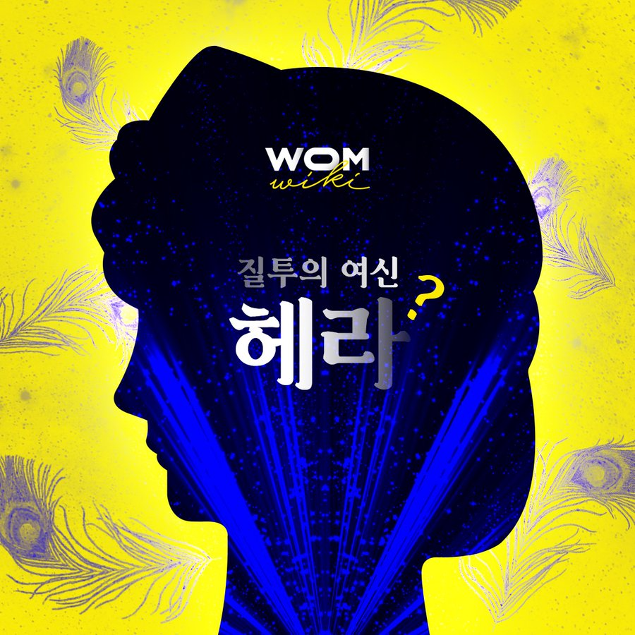

올림푸스 12신 중 한 명. 아르고스 지방에서 막강한 힘을 지닌 대지모신이다.

헤라는 탄생, 창조성 그리고 대지의 풍부함을 상징하는 대지모신으로, 신 중에서도 가장 강하고 영향력 있는 신이다.
영웅을 뜻하는 영어 단어 ‘hero’의 어원이 ‘hera’라는 것을 통해서도, 헤라는 뛰어난 능력을 가진 영웅이었음을 알 수 있다.
그리스 신화 속 헤라는 뛰어난 능력을 가진 신보다는 질투심이 많아 다른 신과 인간들을 못살게 구는 존재로 묘사된다. 이는 그리스의 가부장제 사회가 강력한 힘을 가진 여성신을 왜곡시켰기 때문이다.
처음에 헤라의 남편인 제우스는 주로 여성들을 쫓아다니는 별 볼일 없는 날씨의 신이었고, 헤라는 아르고스 지방에서 막강한 힘을 가진 대지모신(大地母神)이었다. 그런데 헤라가 공식적으로 제우스와 결혼을 하면서 자신의 고유한 기능을 흡수당했다. 즉, 결혼을 통해 위계질서가 성립되면서 귄위를 잃은 것이다.
제우스가 여러 여성과 바람피우는 것은 여성 신들이 가진 능력을 흡수하는 과정을 상징한다.
#여성위키_전설속의여성들 콘텐츠 중 첫번째로 소개된 인물이다.